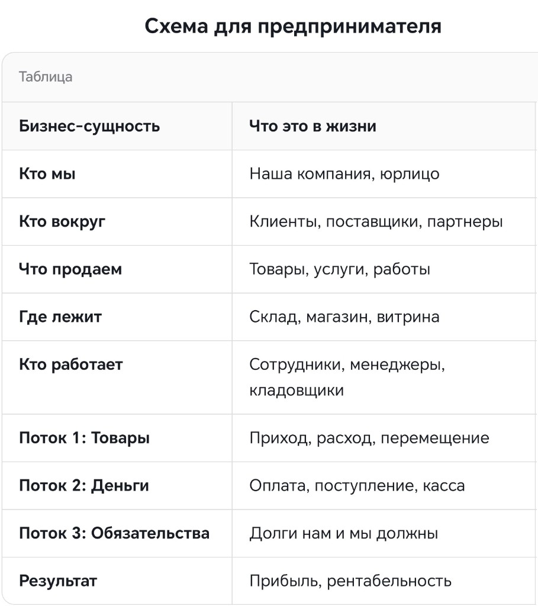

Предметная область
Когда Вы открываете ИП или регистрируете ООО, вы становитесь участником Хозяйственно-экономической или Коммерческой деятельности. Предприниматель живёт внутри этой деятиельности, где есть участники и правила.
Вот её структура из 4 слоёв — от того, что вы продаёте, до того, кто управляет всей системой.
-
Продукт и ценности Ядро
Это «Что вы продаёте?» и «Зачем это клиенту?». Сюда входят не только товары, но и сервис, упаковка, бренд. Например, для владельца кофейни — это не зерна, а атмосфера и скорость обслуживания.
-
Рынок и клиенты Внешний контур
Это «Кто платит?» и «Кто мешает?». Сюда входят: портрет целевой аудитории, конкуренты, тренды, сезонность спроса и законы государства. Это самая изменчивая часть.
-
Ресурсы и операции Внутренняя кухня
Это «Как это работает?» и «На чём держится?». Персонал, финансы (денежный поток, себестоимость), поставщики, оборудование, аренда. Предприниматель должен видеть это как единый конвейер.
-
Сам предприниматель Управленческий центр
Это «Кто принимает решения?». Сюда входят: личная эффективность, делегирование, стратегия, устойчивость к стрессу и умение видеть возможности. Это самая главная сущность — если она «ломается», вся система рушится.
Схема для предпринимателя
Как основные бизнес-сущности выглядят в реальной жизни компании.

Итог
Предметная область — это не только товары и деньги. Это целостная система: ценность для клиента, рынок вокруг, внутренние процессы и сам предприниматель как центр управления. Понимание всех четырёх слоёв помогает видеть бизнес целиком и принимать более взвешенные решения.